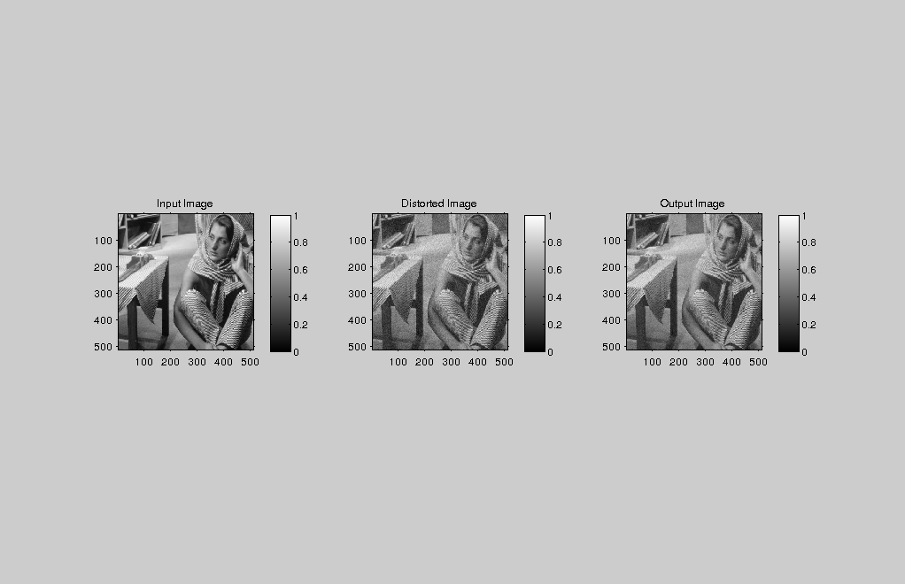

Contents
MyMainScript
tic;
Adding noise to the original image
im = load('../data/barbara.mat'); % Adding gaussion noise to image img=im.imageOrig; [ x,y ] = size(img); %randn() gives random numbers drawn independently from % a Gaussian with mean 0 and standard deviation 1. intensityRange = max(max(img)) - min(min(img)); gaussNoise = 0.05*intensityRange*randn([x y]); corrupt = img + gaussNoise; %[ out ] = myBilateralFiltering(corrupt,1,1); %figure,imshow(corrupt); %figure,imshow(out); %toc;
Calling the function myBilateralFiltering
As Given in question
sigmaSpace = 1.1*[1, .9, 1.1, 1, 1];
sigmaIntensity = 4.5*[1, 1, 1, .9, 1.1];
for i=1:5
[ out ] = myBilateralFiltering(corrupt,sigmaSpace(i), sigmaIntensity(i) ); iptsetpref('ImshowAxesVisible','on'); figure('units','normalized','outerposition',[0 0 1 1]) mainFig= subplot(1,3,1); imshow(mat2gray(img)), colorbar; title('Input Image') subplot(1,3,2); imshow(mat2gray(corrupt)), colorbar; title('Distorted Image') subplot(1,3,3); imshow(mat2gray(out)), colorbar; title('Output Image')
RMSD
Used the method given in slides for calculating the RMSD
diffImage = out - img; RMSD = sqrt(sum(sum(diffImage.^2))/(x*y)); disp(RMSD); name = strcat(['../images/finalOutput_' 'case' num2str(i) '_' num2str(sigmaSpace(i)) '_' num2str(sigmaIntensity(i))]); file_name = strcat([name '.png']) imwrite(mat2gray(out),file_name);
4.1920 file_name = ../images/finalOutput_case1_1.1_4.5.png
4.2531 file_name = ../images/finalOutput_case2_0.99_4.5.png
4.1427 file_name = ../images/finalOutput_case3_1.21_4.5.png
4.3201 file_name = ../images/finalOutput_case4_1.1_4.05.png
4.0681 file_name = ../images/finalOutput_case5_1.1_4.95.png
end
toc;
Elapsed time is 84.771348 seconds.